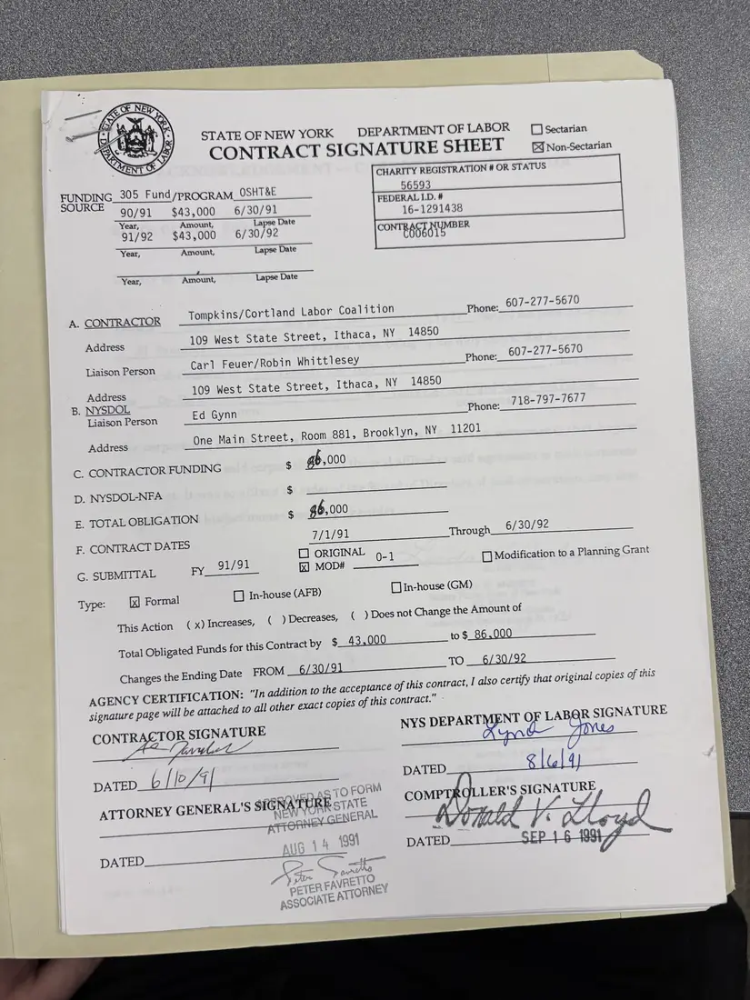
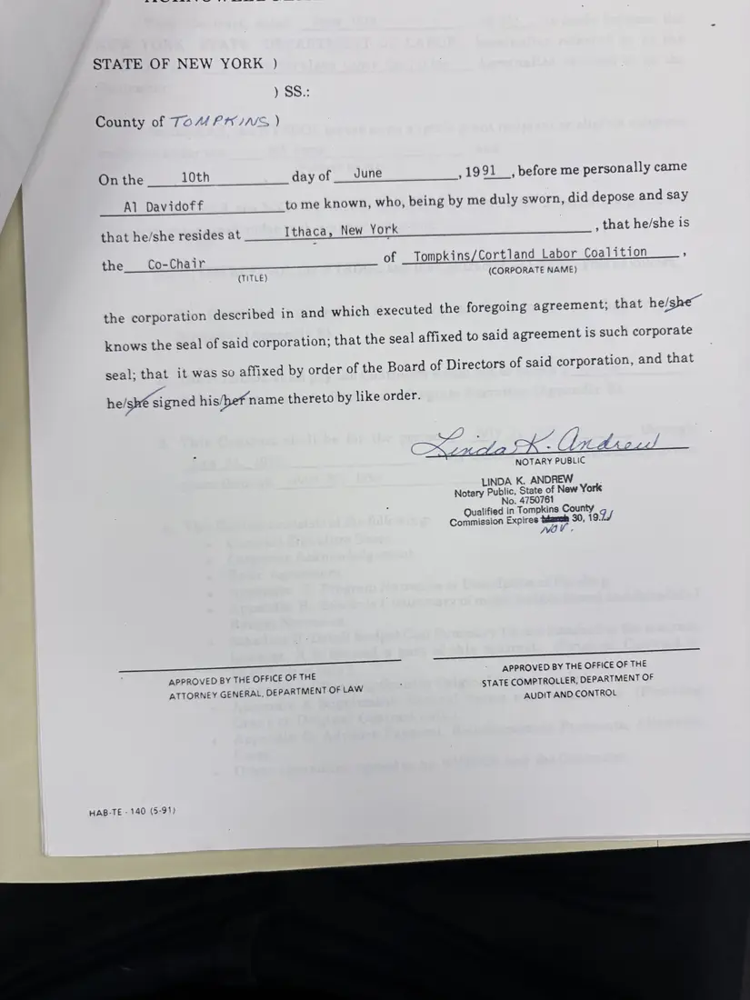
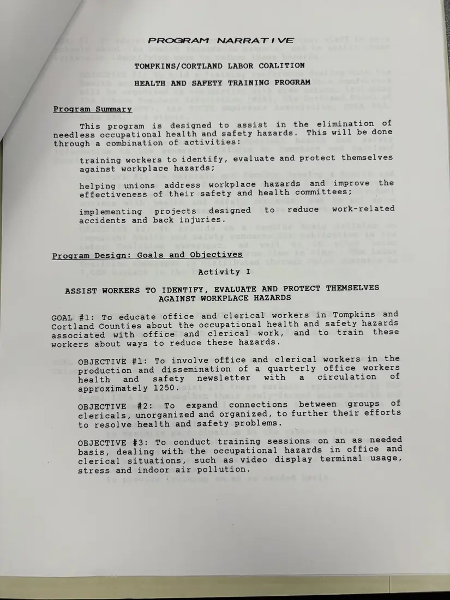
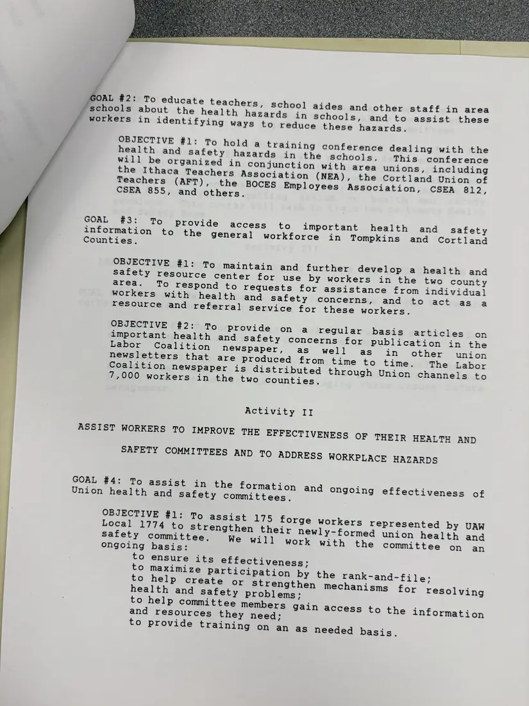
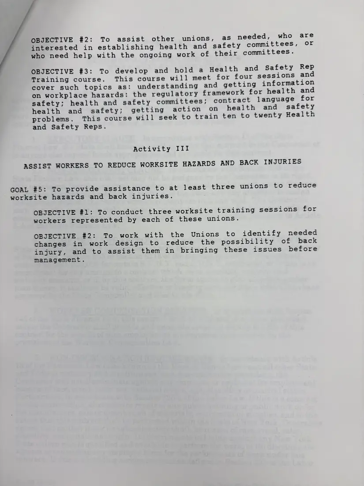

Agreement, 5 pages
State health and safety training contract, July 1991 – June 1992
July 1, 1991 – June 30, 1992
A modification adding a second year of $43,000 (a total of $86,000) to the Coalition's health and safety training contract, with Carl Feuer and Robin Whittlesey as liaisons, and the program narrative: training office and clerical workers on video display terminals, stress, and indoor air through the FYI newsletter; a school conference with the area teachers' and BOCES unions; a resource center and newspaper articles; help for union health and safety committees, including a forge local; a health and safety rep course; and worksite training on back injuries.
Download or cite this itemPages


(open zoom view)Read the page text (machine-read, contains errors)
This text was generated automatically from the photograph and has not been corrected. The image is the authoritative record.
STATE OF NEW YORK DEPARTMENT OF LABOR [1] sectarian CONTRACT SIGNATURE SHEET = non-Sectarian CHARITY REGISTRATION # OR STATUS FUNDING_305 Fund/pROGRAM_OSHT8E SOURCE 90/91 $43,000 6/30/91 Year, Amount, Lapse Dat 91/92 $43,000 6/30/92 ; Year, Amount, Lapse Date Year, Amount, Lapse Date 607-277-5670 A. CONTRACTOR Tompkins/Cortland Labor Coalition Phone: Address 109 West State Street, Ithaca, NY 14850 Liaison Person Carl Feuer/Robin Whittlesey Phone: 607-277-5670 Address 109 West State Street, Ithaca, NY 14850 B. NYSDOL Liaison Person Ed Gynn Phone: 718-797-7677 Address One Main Street, Room 881, Brooklyn, NY 11201 S&S CONTRACTOR FUNDING $ gb .000 D. NYSDOL-NFA $ E. TOTAL OBLIGATION $ g6,000 F. CONTRACT DATES 7/1/91 Through 6/30/92 91/91 1 ORIGINAL 5.1 G. SUBMITTAL FY. ll MOD# [1 Modification to a Planning Grant Type: | Formal LD In-house (AFB) [In-house (GM) This Action ( x) Increases, ( ) Decreases, ( ) Does not Change the Amount of Total Obligated Funds for this Contract by $ 43,000 to $, Changes the Ending Date FROM _6/ 30/91 TO __ 6/30/92 AGENCY CERTIFICATION: “In addition to the acceptance of this contract, L also certify that original copies of this signature page will be attached to all other exact copies of this contract.” - CONTRACTOR SIGNATURE NYS DEPARTMENT OF LABQR SIGNATURE whet ie pateD._b | [p/h menu semua DATED ae ~ TO FORM ' ete) vieipw. . ‘i | ATTORNEY GENERAL'S SIGRATER STATE, COM LER SSIGNATURY, ; | Sy 400 : tO OK Sie ig 5 14 1991 DATED 1001 4 | DATED K oat ne oro


(open zoom view)Read the page text (machine-read, mostly readable)
This text was generated automatically from the photograph and has not been corrected. The image is the authoritative record.
STATE OF NEW YORK ) County of ToM PAINS ) On the 10th day of June ; 1991 , before me personally came Al Davidoff to me known, who, being by me duly sworn, did depose and say that he/she resides at Ithaca, New York , that he/she is the Co-Chair of _ Tompkins/Cortland Labor Coalition , (TITLE) (CORPORATE NAME) the corporation described in and which executed the foregoing agreement, that he/she~ knows the seal of said corporation; that the seal affixed to said agreement is such corporate seal: that it was so affixed by order of the Board of Directors of said corporation, and that he/sh€ signed his/hef name thereto by like order. NOTARY PUBLIC LINDA K. ANDREW Notary —_ State of New York lo. 4750761 Qualified in ‘Tompkins ae Commission Expires tytarel: 30, 1 oZ/ jv ¢ APPROVED BY THE OFFICE OF THE APPROVED BY THE OFFICE OF THE ATTORNEY GENERAL, DEPARTMENT OF LAW 4 STATE COMPTROLLER, DEPARTMENT OF AUDIT AND CONTROL HAB-TE - 140 (5-91)


(open zoom view)Read the page text (machine-read, mostly readable)
This text was generated automatically from the photograph and has not been corrected. The image is the authoritative record.
/ PROGRAM NARRAT 1 VE TOMPKINS/CORTLAND LABOR COALITION HEALTH AND SAFETY TRAINING PROGRAM Program Summary This program is designed to assist in the elimination of needless occupational health and safety hazards. This will be done through a combination of activities: training workers to identify, evaluate and protect themselves against workplace hazards; helping unions address workplace hazards and improve the effectiveness of their safety and health committees; implementing projects designed to reduce work-related accidents and back injuries. Program Design: Goals and Objectives Activity I ASSIST WORKERS TO IDENTIFY, EVALUATE AND PROTECT THEMSELVES AGAINST WORKPLACE HAZARDS GOAL #1: To educate office and clerical workers in Tompkins and Cortland Counties about the occupational health and safety hazards associated with office and clerical works and etosifrain these workers about ways to reduce these hazards. OBJECTIVE #1: To involve office and clerical workers in the production and dissemination of a quarterly office workers health and safety newsletter with a circulation of approximately 1250. OBJECTIVE #2: To expand connections between groups of clericals, unorganized and organized, to further their efforts to resolve health and safety problems. OBJECTIVE #3: To conduct training sessions on an as needed basis, dealing with the occupational hazards in office and clerical situations, such as video display terminal usage, stress and indoor air pollution.


(open zoom view)Read the page text (machine-read, mostly readable)
This text was generated automatically from the photograph and has not been corrected. The image is the authoritative record.
OAL #2: To educate teachers, school aides and other staff in area schools about the health hazards in schools, and to assist these workers in identifying ways to reduce these hazards. OBJECTIVE #1: To hold a training conference dealing with the health and Safety hazards in the schools. This conference will be organized in conjunction with area unions, including the Ithaca Teachers Association (NEA), the Cortland Union of Teachers (AFT), the BOCES Employees Association, CSEA 812, CSEA 855, and others. GOAL #3: To Provide access to important health and safety information to the general workforce in Tompkins and Cortland Counties, OBJECTIVE #1: To maintain and further develop a health and safety resource center for use by workers in the two county area. To respond to requests for assistance from individual workers with health and safety concerns, and to act gas-.a resource and referral service for these workers. OBJECTIVE #2: To Provide on a regular basis articles on important health and safety concerns for publication in the Labor Coalition newspaper, as well as in other union Coalition newspaper is distributed through Union channels to 7,000 workers in the two counties. Activity II ASSIST WORKERS TO IMPROVE THE EFFECTIVENESS OF THEIR HEALTH AND SAFETY COMMITTEES AND TO ADDRESS WORKPLACE HAZARDS GOAL #4: To assist in the formation and Ongoing effectiveness of Union health and safety committees. OBJECTIVE #1: To assist 175 forge workers represented by UAW Local 1774 to strengthen their newly-formed union health and safety committee, We will work with the committee on an ongoing basis: to ensure its effectiveness; to maximize Participation by the rank-and-file; to help create or strengthen mechanisms for resolving health and safety Problems; to help committee members gain access to the information and resources they need; to provide training on an as needed basis.


(open zoom view)Read the page text (machine-read, mostly readable)
This text was generated automatically from the photograph and has not been corrected. The image is the authoritative record.
OBJECTIVE #2: To assist other unions, as needed, who are interested in establishing health and safety committees, or who need help with the ongoing work of their committees. OBJECTIVE #3: To develop and hold a Health and Safety Rep Training course. This course will meet for four sessions and cover such topics as: understanding and getting information on workplace hazards: the regulatory framework for health and safety; health and safety committees; contract language for health and safety; getting action on health and safety problems. This course will seek to train ten to twenty Health and Safety Reps. Activity III ASSIST WORKERS TO REDUCE WORKSITE HAZARDS AND BACK INJURIES GOAL #5: To provide assistance to at least three unions to reduce worksite hazards and back injuries. OBJECTIVE #1: To conduct three worksite training sessions for workers represented by each of these unions. OBJECTIVE #2: To work with the Unions to identify needed changes in work design to reduce the possibility of back injury, and to assist them in bringing these issues before management.
See something wrong, or recognize a person or event? Send a correction. If you hold rights in this item or think it should not be public, write to the same address.